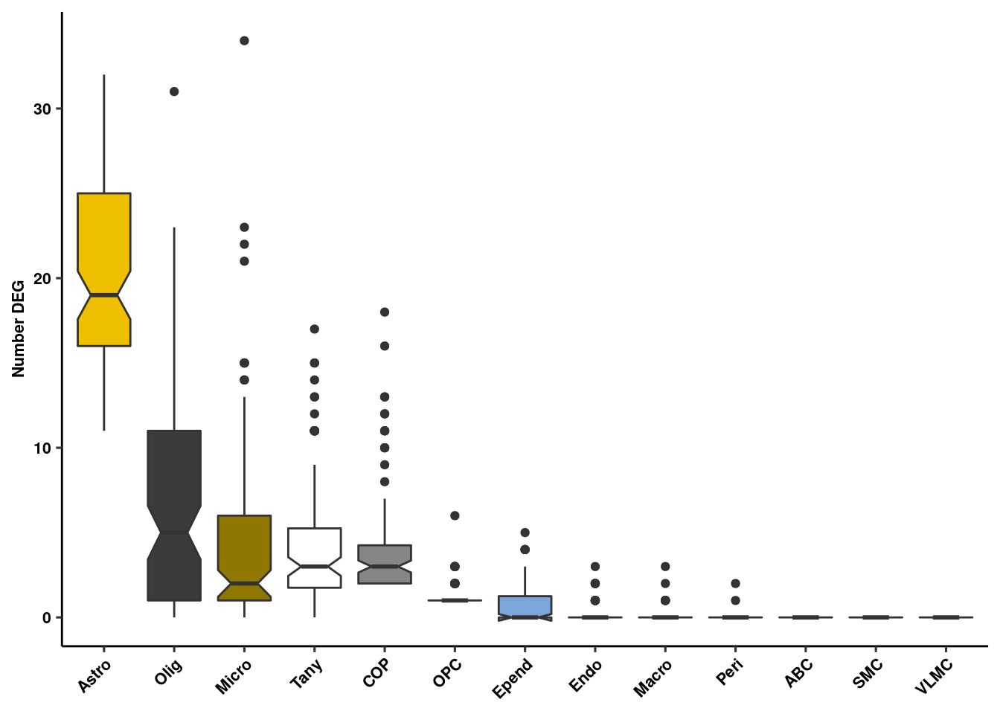
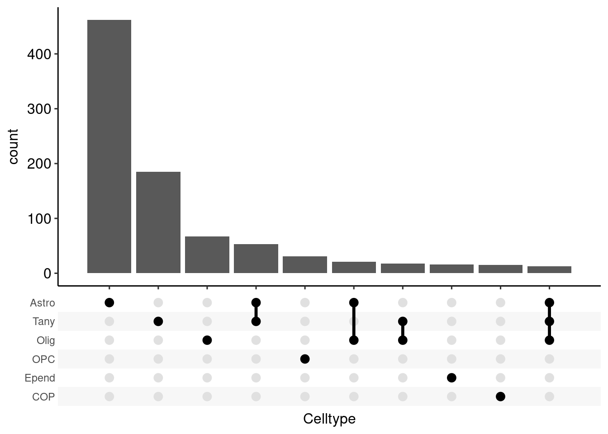
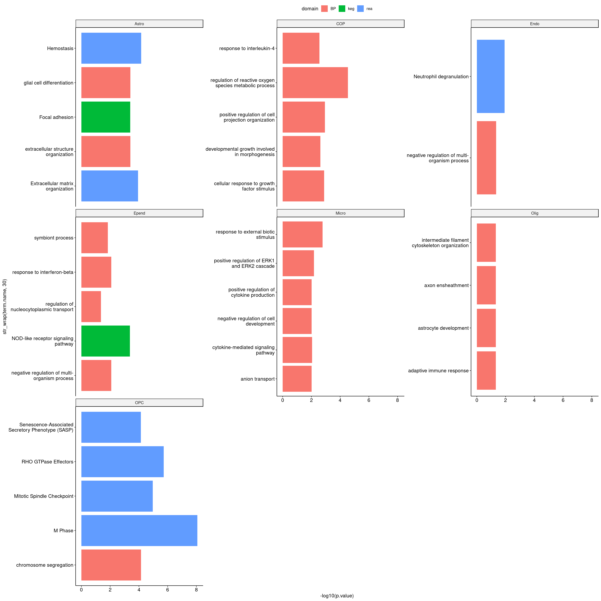
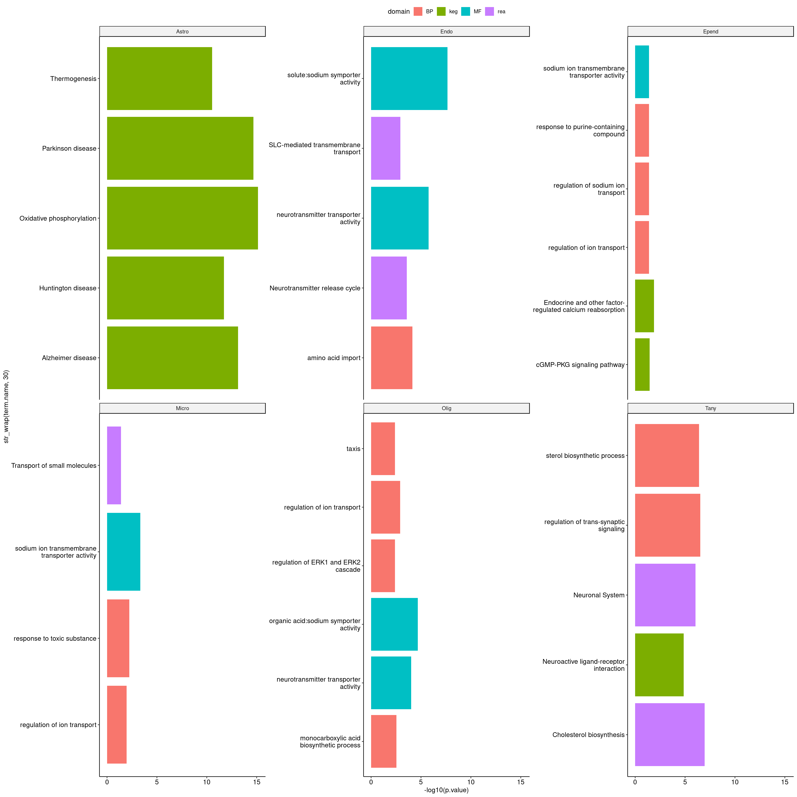

Last updated: 2019-10-28
Checks: 6 1
Knit directory: fgf_alldata/
This reproducible R Markdown analysis was created with workflowr (version 1.4.0). The Checks tab describes the reproducibility checks that were applied when the results were created. The Past versions tab lists the development history.
Great! Since the R Markdown file has been committed to the Git repository, you know the exact version of the code that produced these results.
The global environment had objects present when the code in the R Markdown file was run. These objects can affect the analysis in your R Markdown file in unknown ways. For reproduciblity it’s best to always run the code in an empty environment. Use wflow_publish or wflow_build to ensure that the code is always run in an empty environment.
The following objects were defined in the global environment when these results were created:
| Name | Class | Size |
|---|---|---|
| data | environment | 56 bytes |
| env | environment | 56 bytes |
The command set.seed(20191021) was run prior to running the code in the R Markdown file. Setting a seed ensures that any results that rely on randomness, e.g. subsampling or permutations, are reproducible.
Great job! Recording the operating system, R version, and package versions is critical for reproducibility.
Nice! There were no cached chunks for this analysis, so you can be confident that you successfully produced the results during this run.
Great job! Using relative paths to the files within your workflowr project makes it easier to run your code on other machines.
Great! You are using Git for version control. Tracking code development and connecting the code version to the results is critical for reproducibility. The version displayed above was the version of the Git repository at the time these results were generated.
Note that you need to be careful to ensure that all relevant files for the analysis have been committed to Git prior to generating the results (you can use wflow_publish or wflow_git_commit). workflowr only checks the R Markdown file, but you know if there are other scripts or data files that it depends on. Below is the status of the Git repository when the results were generated:
Ignored files:
Ignored: .Rproj.user/
Ignored: test_files/
Untracked files:
Untracked: code/sc_functions.R
Untracked: data/fgf_filtered_nuclei.RDS
Untracked: data/filtglia.RDS
Untracked: data/glia/
Untracked: data/lps1.txt
Untracked: data/mcao1.txt
Untracked: data/mcao_d3.txt
Untracked: data/mcaod7.txt
Untracked: data/neur_astro_induce.xlsx
Untracked: data/neuron/
Untracked: data/synaptic_activity_induced.xlsx
Untracked: dge_resample.pdf
Untracked: docs/figure/11_wc_astro_wgcna.Rmd/
Untracked: docs/figure/12_oligo_labeltransfer.Rmd/
Untracked: docs/figure/13_olig_pseudotime.Rmd/
Untracked: docs/figure/14_tanycyte_labeltransfer.Rmd/
Untracked: docs/figure/9_wc_processing.Rmd/
Untracked: gotermdown.pdf
Untracked: gotermup.pdf
Untracked: olig_ttest_padj.csv
Untracked: output/agrp_pcgenes.csv
Untracked: output/all_wc_markers.csv
Untracked: output/allglia_wgcna_genemodules.csv
Untracked: output/glia/
Untracked: output/glial_markergenes.csv
Untracked: output/integrated_all_markergenes.csv
Untracked: output/integrated_neuronmarkers.csv
Untracked: output/neuron/
Untracked: wc_de.pdf
Note that any generated files, e.g. HTML, png, CSS, etc., are not included in this status report because it is ok for generated content to have uncommitted changes.
These are the previous versions of the R Markdown and HTML files. If you’ve configured a remote Git repository (see ?wflow_git_remote), click on the hyperlinks in the table below to view them.
| File | Version | Author | Date | Message |
|---|---|---|---|---|
| Rmd | 650ab6b | Full Name | 2019-10-28 | wflow_git_commit(all = T) |
| Rmd | 9c13525 | Full Name | 2019-10-28 | wflow_publish("analysis/[10-15]*.Rmd") |
library(DESeq2)
library(Seurat)
library(future.apply)
library(ggplot2)
library(ggpubr)
library(RColorBrewer)
library(here)
library(reshape2)
library(tidyverse)
library(cowplot)
library(ggupset)
library(gProfileR)
library(here)
library(ggrepel)
plan(multiprocess, workers = 30)
source(here("code/sc_functions.R"))rundeseq <- function(pb) {
future_lapply(pb, function(x) {
tryCatch({
trt <- ifelse(grepl("FGF", colnames(x)), yes = "F", no = "P")
sample <- as.factor(sapply(strsplit(colnames(x), "_"), "[", 1))
batch <- batch_df[match(sample, batch_df$samp), "batch"]
meta <- data.frame(trt = trt, batch = factor(batch))
dds <- DESeqDataSetFromMatrix(
countData = x,
colData = meta,
design = ~ batch + trt
)
keep <- rowSums(counts(dds) >= 5) > 5
dds <- dds[keep, ]
dds <- DESeq(dds)
res <- results(dds, contrast = c("trt", "F", "P"))
return(list(dds, res))
}, error = function(err) {
print(err)
})
})
}glia_sub <- readRDS(here("data/filtglia.RDS"))batch_df <- data.frame(
samp = c(7, 12, 29, 28, 4, 27, 37, 22, 6, 30, 20, 21, 35, 10, 3, 25, 36, 34),
batch = rep(1:6, each = 3)
)
split_mats <- splitbysamp(glia_sub, split_by = "orig.ident")
names(split_mats) <- unique(Idents(glia_sub))
test <- replicate(100, gen_pseudo_counts(split_mats, ncells = 30))
names(test) <- paste0(rep(names(split_mats)), "_", rep(1:100, each = length(names(split_mats))))
res <- rundeseq(test)Warning in lfproc(x, y, weights = weights, cens = cens, base = base, geth =
geth, : Estimated rdf < 1.0; not estimating variance
Warning in lfproc(x, y, weights = weights, cens = cens, base = base, geth =
geth, : Estimated rdf < 1.0; not estimating variance
Warning in lfproc(x, y, weights = weights, cens = cens, base = base, geth =
geth, : Estimated rdf < 1.0; not estimating variance
Warning in lfproc(x, y, weights = weights, cens = cens, base = base, geth =
geth, : Estimated rdf < 1.0; not estimating variance
Warning in lfproc(x, y, weights = weights, cens = cens, base = base, geth =
geth, : Estimated rdf < 1.0; not estimating variance
Warning in lfproc(x, y, weights = weights, cens = cens, base = base, geth =
geth, : Estimated rdf < 1.0; not estimating variance
Warning in lfproc(x, y, weights = weights, cens = cens, base = base, geth =
geth, : Estimated rdf < 1.0; not estimating variance
Warning in lfproc(x, y, weights = weights, cens = cens, base = base, geth =
geth, : Estimated rdf < 1.0; not estimating variance
Warning in lfproc(x, y, weights = weights, cens = cens, base = base, geth =
geth, : Estimated rdf < 1.0; not estimating variance
Warning in lfproc(x, y, weights = weights, cens = cens, base = base, geth =
geth, : Estimated rdf < 1.0; not estimating variance
Warning in lfproc(x, y, weights = weights, cens = cens, base = base, geth =
geth, : Estimated rdf < 1.0; not estimating variance
Warning in lfproc(x, y, weights = weights, cens = cens, base = base, geth =
geth, : Estimated rdf < 1.0; not estimating variance
Warning in lfproc(x, y, weights = weights, cens = cens, base = base, geth =
geth, : Estimated rdf < 1.0; not estimating variance
Warning in lfproc(x, y, weights = weights, cens = cens, base = base, geth =
geth, : Estimated rdf < 1.0; not estimating variance
Warning in lfproc(x, y, weights = weights, cens = cens, base = base, geth =
geth, : Estimated rdf < 1.0; not estimating variance
Warning in lfproc(x, y, weights = weights, cens = cens, base = base, geth =
geth, : Estimated rdf < 1.0; not estimating variance
Warning in lfproc(x, y, weights = weights, cens = cens, base = base, geth =
geth, : Estimated rdf < 1.0; not estimating variance
Warning in lfproc(x, y, weights = weights, cens = cens, base = base, geth =
geth, : Estimated rdf < 1.0; not estimating variance
Warning in lfproc(x, y, weights = weights, cens = cens, base = base, geth =
geth, : Estimated rdf < 1.0; not estimating variance
Warning in lfproc(x, y, weights = weights, cens = cens, base = base, geth =
geth, : Estimated rdf < 1.0; not estimating variance
Warning in lfproc(x, y, weights = weights, cens = cens, base = base, geth =
geth, : Estimated rdf < 1.0; not estimating variance
Warning in lfproc(x, y, weights = weights, cens = cens, base = base, geth =
geth, : Estimated rdf < 1.0; not estimating variance
Warning in lfproc(x, y, weights = weights, cens = cens, base = base, geth =
geth, : Estimated rdf < 1.0; not estimating variance
Warning in lfproc(x, y, weights = weights, cens = cens, base = base, geth =
geth, : Estimated rdf < 1.0; not estimating variance
Warning in lfproc(x, y, weights = weights, cens = cens, base = base, geth =
geth, : Estimated rdf < 1.0; not estimating variance
Warning in lfproc(x, y, weights = weights, cens = cens, base = base, geth =
geth, : Estimated rdf < 1.0; not estimating variance
Warning in lfproc(x, y, weights = weights, cens = cens, base = base, geth =
geth, : Estimated rdf < 1.0; not estimating variance
Warning in lfproc(x, y, weights = weights, cens = cens, base = base, geth =
geth, : Estimated rdf < 1.0; not estimating variance
Warning in lfproc(x, y, weights = weights, cens = cens, base = base, geth =
geth, : Estimated rdf < 1.0; not estimating variance
Warning in lfproc(x, y, weights = weights, cens = cens, base = base, geth =
geth, : Estimated rdf < 1.0; not estimating variance
Warning in lfproc(x, y, weights = weights, cens = cens, base = base, geth =
geth, : Estimated rdf < 1.0; not estimating variance
Warning in lfproc(x, y, weights = weights, cens = cens, base = base, geth =
geth, : Estimated rdf < 1.0; not estimating variance
Warning in lfproc(x, y, weights = weights, cens = cens, base = base, geth =
geth, : Estimated rdf < 1.0; not estimating variance
Warning in lfproc(x, y, weights = weights, cens = cens, base = base, geth =
geth, : Estimated rdf < 1.0; not estimating variance
Warning in lfproc(x, y, weights = weights, cens = cens, base = base, geth =
geth, : Estimated rdf < 1.0; not estimating variance
Warning in lfproc(x, y, weights = weights, cens = cens, base = base, geth =
geth, : Estimated rdf < 1.0; not estimating variance
Warning in lfproc(x, y, weights = weights, cens = cens, base = base, geth =
geth, : Estimated rdf < 1.0; not estimating variance
Warning in lfproc(x, y, weights = weights, cens = cens, base = base, geth =
geth, : Estimated rdf < 1.0; not estimating variance
Warning in lfproc(x, y, weights = weights, cens = cens, base = base, geth =
geth, : Estimated rdf < 1.0; not estimating variance
Warning in lfproc(x, y, weights = weights, cens = cens, base = base, geth =
geth, : Estimated rdf < 1.0; not estimating variance
Warning in lfproc(x, y, weights = weights, cens = cens, base = base, geth =
geth, : Estimated rdf < 1.0; not estimating variance
Warning in lfproc(x, y, weights = weights, cens = cens, base = base, geth =
geth, : Estimated rdf < 1.0; not estimating variance
Warning in lfproc(x, y, weights = weights, cens = cens, base = base, geth =
geth, : Estimated rdf < 1.0; not estimating variance
Warning in lfproc(x, y, weights = weights, cens = cens, base = base, geth =
geth, : Estimated rdf < 1.0; not estimating variance
Warning in lfproc(x, y, weights = weights, cens = cens, base = base, geth =
geth, : Estimated rdf < 1.0; not estimating variance
Warning in lfproc(x, y, weights = weights, cens = cens, base = base, geth =
geth, : Estimated rdf < 1.0; not estimating variance
Warning in lfproc(x, y, weights = weights, cens = cens, base = base, geth =
geth, : Estimated rdf < 1.0; not estimating variance
Warning in lfproc(x, y, weights = weights, cens = cens, base = base, geth =
geth, : Estimated rdf < 1.0; not estimating variance
Warning in lfproc(x, y, weights = weights, cens = cens, base = base, geth =
geth, : Estimated rdf < 1.0; not estimating variance
Warning in lfproc(x, y, weights = weights, cens = cens, base = base, geth =
geth, : Estimated rdf < 1.0; not estimating variance
Warning in lfproc(x, y, weights = weights, cens = cens, base = base, geth =
geth, : Estimated rdf < 1.0; not estimating variance
Warning in lfproc(x, y, weights = weights, cens = cens, base = base, geth =
geth, : Estimated rdf < 1.0; not estimating variance
Warning in lfproc(x, y, weights = weights, cens = cens, base = base, geth =
geth, : Estimated rdf < 1.0; not estimating variance
Warning in lfproc(x, y, weights = weights, cens = cens, base = base, geth =
geth, : Estimated rdf < 1.0; not estimating variance
Warning in lfproc(x, y, weights = weights, cens = cens, base = base, geth =
geth, : Estimated rdf < 1.0; not estimating variance
Warning in lfproc(x, y, weights = weights, cens = cens, base = base, geth =
geth, : Estimated rdf < 1.0; not estimating variance
Warning in lfproc(x, y, weights = weights, cens = cens, base = base, geth =
geth, : Estimated rdf < 1.0; not estimating variance
Warning in lfproc(x, y, weights = weights, cens = cens, base = base, geth =
geth, : Estimated rdf < 1.0; not estimating variance
Warning in lfproc(x, y, weights = weights, cens = cens, base = base, geth =
geth, : Estimated rdf < 1.0; not estimating variance
Warning in lfproc(x, y, weights = weights, cens = cens, base = base, geth =
geth, : Estimated rdf < 1.0; not estimating variance
Warning in lfproc(x, y, weights = weights, cens = cens, base = base, geth =
geth, : Estimated rdf < 1.0; not estimating variance
Warning in lfproc(x, y, weights = weights, cens = cens, base = base, geth =
geth, : Estimated rdf < 1.0; not estimating variance
Warning in lfproc(x, y, weights = weights, cens = cens, base = base, geth =
geth, : Estimated rdf < 1.0; not estimating variance
Warning in lfproc(x, y, weights = weights, cens = cens, base = base, geth =
geth, : Estimated rdf < 1.0; not estimating variance
Warning in lfproc(x, y, weights = weights, cens = cens, base = base, geth =
geth, : Estimated rdf < 1.0; not estimating variance
Warning in lfproc(x, y, weights = weights, cens = cens, base = base, geth =
geth, : Estimated rdf < 1.0; not estimating variance
Warning in lfproc(x, y, weights = weights, cens = cens, base = base, geth =
geth, : Estimated rdf < 1.0; not estimating variance
Warning in lfproc(x, y, weights = weights, cens = cens, base = base, geth =
geth, : Estimated rdf < 1.0; not estimating variance
Warning in lfproc(x, y, weights = weights, cens = cens, base = base, geth =
geth, : Estimated rdf < 1.0; not estimating variance
Warning in lfproc(x, y, weights = weights, cens = cens, base = base, geth =
geth, : Estimated rdf < 1.0; not estimating variance
Warning in lfproc(x, y, weights = weights, cens = cens, base = base, geth =
geth, : Estimated rdf < 1.0; not estimating variance
Warning in lfproc(x, y, weights = weights, cens = cens, base = base, geth =
geth, : Estimated rdf < 1.0; not estimating variance
Warning in lfproc(x, y, weights = weights, cens = cens, base = base, geth =
geth, : Estimated rdf < 1.0; not estimating variance
Warning in lfproc(x, y, weights = weights, cens = cens, base = base, geth =
geth, : Estimated rdf < 1.0; not estimating variance
Warning in lfproc(x, y, weights = weights, cens = cens, base = base, geth =
geth, : Estimated rdf < 1.0; not estimating variance
Warning in lfproc(x, y, weights = weights, cens = cens, base = base, geth =
geth, : Estimated rdf < 1.0; not estimating variance
Warning in lfproc(x, y, weights = weights, cens = cens, base = base, geth =
geth, : Estimated rdf < 1.0; not estimating variance
Warning in lfproc(x, y, weights = weights, cens = cens, base = base, geth =
geth, : Estimated rdf < 1.0; not estimating variance
Warning in lfproc(x, y, weights = weights, cens = cens, base = base, geth =
geth, : Estimated rdf < 1.0; not estimating variance
Warning in lfproc(x, y, weights = weights, cens = cens, base = base, geth =
geth, : Estimated rdf < 1.0; not estimating variance
Warning in lfproc(x, y, weights = weights, cens = cens, base = base, geth =
geth, : Estimated rdf < 1.0; not estimating variance
Warning in lfproc(x, y, weights = weights, cens = cens, base = base, geth =
geth, : Estimated rdf < 1.0; not estimating variance
Warning in lfproc(x, y, weights = weights, cens = cens, base = base, geth =
geth, : Estimated rdf < 1.0; not estimating variance
Warning in lfproc(x, y, weights = weights, cens = cens, base = base, geth =
geth, : Estimated rdf < 1.0; not estimating variance
Warning in lfproc(x, y, weights = weights, cens = cens, base = base, geth =
geth, : Estimated rdf < 1.0; not estimating variance
Warning in lfproc(x, y, weights = weights, cens = cens, base = base, geth =
geth, : Estimated rdf < 1.0; not estimating variance
Warning in lfproc(x, y, weights = weights, cens = cens, base = base, geth =
geth, : Estimated rdf < 1.0; not estimating variance
Warning in lfproc(x, y, weights = weights, cens = cens, base = base, geth =
geth, : Estimated rdf < 1.0; not estimating variance
Warning in lfproc(x, y, weights = weights, cens = cens, base = base, geth =
geth, : Estimated rdf < 1.0; not estimating variance
Warning in lfproc(x, y, weights = weights, cens = cens, base = base, geth =
geth, : Estimated rdf < 1.0; not estimating variance
Warning in lfproc(x, y, weights = weights, cens = cens, base = base, geth =
geth, : Estimated rdf < 1.0; not estimating variance
Warning in lfproc(x, y, weights = weights, cens = cens, base = base, geth =
geth, : Estimated rdf < 1.0; not estimating variance
Warning in lfproc(x, y, weights = weights, cens = cens, base = base, geth =
geth, : Estimated rdf < 1.0; not estimating variance
Warning in lfproc(x, y, weights = weights, cens = cens, base = base, geth =
geth, : Estimated rdf < 1.0; not estimating variance
Warning in lfproc(x, y, weights = weights, cens = cens, base = base, geth =
geth, : Estimated rdf < 1.0; not estimating variance
Warning in lfproc(x, y, weights = weights, cens = cens, base = base, geth =
geth, : Estimated rdf < 1.0; not estimating variance
Warning in lfproc(x, y, weights = weights, cens = cens, base = base, geth =
geth, : Estimated rdf < 1.0; not estimating variance
Warning in lfproc(x, y, weights = weights, cens = cens, base = base, geth =
geth, : Estimated rdf < 1.0; not estimating variance
Warning in lfproc(x, y, weights = weights, cens = cens, base = base, geth =
geth, : Estimated rdf < 1.0; not estimating variance
Warning in lfproc(x, y, weights = weights, cens = cens, base = base, geth =
geth, : Estimated rdf < 1.0; not estimating variancedegenes <- lapply(res, function(x) {
tryCatch({
y <- x[[2]]
y <- na.omit(y)
data.frame(y) %>%
filter(padj < 0.1) %>%
nrow()
},
error = function(err) {
NA
}
)
})
boxplot <- lapply(unique(Idents(glia_sub)), function(x) {
y <- paste0("^", x)
z <- unlist(degenes[grep(y, names(degenes))])
})
names(boxplot) <- unique(Idents(glia_sub))
genenum <- melt(boxplot)
colnames(genenum) <- c("number", "CellType")
write_csv(genenum, here("output/glia/wc_resamplingresults.csv"))
ggplot(genenum, aes(x = reorder(CellType, -number), y = number, fill = CellType)) +
geom_boxplot(notch = T) + theme_pubr() +
theme(
legend.position = "none", axis.text.x = element_text(angle = 45, hjust = 1),
plot.title = element_text(hjust = .5, face = "bold")
) +
xlab("Cell Type") + ylab("Number of DE Genes")
ggsave("dge_resample.pdf", w = 20)split_mats <- lapply(unique(Idents(glia_sub)), function(x) {
sub <- subset(glia_sub, idents = x)
DefaultAssay(sub) <- "SCT"
list_sub <- SplitObject(sub, split.by = "orig.ident")
return(list_sub)
})
names(split_mats) <- unique(Idents(glia_sub))
pseudo_counts <- lapply(split_mats, function(x) {
lapply(x, function(y) {
DefaultAssay(y) <- "SCT"
mat <- GetAssayData(y, slot = "counts")
counts <- Matrix::rowSums(mat)
}) %>%
do.call(rbind, .) %>%
t() %>%
as.data.frame()
})
names(pseudo_counts) <- names(split_mats)dds_list <- lapply(pseudo_counts, function(x) {
tryCatch({
trt <- ifelse(grepl("FGF", colnames(x)), yes = "F", no = "P")
sample <- as.factor(sapply(strsplit(colnames(x), "_"), "[", 1))
batch <- batch_df[match(sample, batch_df$samp), "batch"]
meta <- data.frame(trt = trt, batch = factor(batch))
dds <- DESeqDataSetFromMatrix(
countData = x,
colData = meta,
design = ~ batch + trt
)
keep <- rowSums(counts(dds) >= 5) > 5
dds <- dds[keep, ]
dds <- DESeq(dds)
res <- results(dds, contrast = c("trt", "F", "P"))
return(list(dds, res))
}, error = function(err) {
print(err)
})
})volc_list <- lapply(dds_list, function(x) {
x[[2]] %>%
na.omit() %>%
data.frame() %>%
add_rownames("gene") %>%
mutate(siglog = ifelse(padj < 0.05 & abs(log2FoldChange) > .5, yes = T, no = F)) %>%
mutate(onlysig = ifelse(padj < 0.05 & abs(log2FoldChange) < .5, yes = T, no = F)) %>%
mutate(onlylog = ifelse(padj > 0.05 & abs(log2FoldChange) > .5, yes = T, no = F)) %>%
mutate(col = ifelse(siglog == T, yes = "1", no =
ifelse(onlysig == T, yes = "2", no =
ifelse(onlylog == T, yes = "3", no = "4")
)
)) %>%
arrange(padj) %>%
mutate(label = case_when(
min(padj) > 0.05 ~ "",
min_rank(padj) <= 10 ~ gene,
TRUE ~ NA_character_
)) %>%
dplyr::select(gene, log2FoldChange, padj, col, label)
})
mapply(x = volc_list, y = names(volc_list), function(x, y) {
write_csv(x, path = sprintf(here("output/glia/wc_%s_pseudobulk_dge.csv"), y))
}) Peri Astro Tany Endo
gene Character,970 Character,10979 Character,9879 Character,3122
log2FoldChange Numeric,970 Numeric,10979 Numeric,9879 Numeric,3122
padj Numeric,970 Numeric,10979 Numeric,9879 Numeric,3122
col Character,970 Character,10979 Character,9879 Character,3122
label Character,970 Character,10979 Character,9879 Character,3122
OPC Olig Epend COP
gene Character,9158 Character,6372 Character,6047 Character,548
log2FoldChange Numeric,9158 Numeric,6372 Numeric,6047 Numeric,548
padj Numeric,9158 Numeric,6372 Numeric,6047 Numeric,548
col Character,9158 Character,6372 Character,6047 Character,548
label Character,9158 Character,6372 Character,6047 Character,548
Micro VLMC Macro SMC
gene Character,897 Character,1497 Character,872 Character,237
log2FoldChange Numeric,897 Numeric,1497 Numeric,872 Numeric,237
padj Numeric,897 Numeric,1497 Numeric,872 Numeric,237
col Character,897 Character,1497 Character,872 Character,237
label Character,897 Character,1497 Character,872 Character,237
ABC
gene Character,22
log2FoldChange Numeric,22
padj Numeric,22
col Character,22
label Character,22volc_list <- volc_list[as.logical(unlist(lapply(volc_list, function(x) !min(x$padj > 0.05))))]
plotlist <- mapply(x = volc_list, y = names(volc_list), function(x, y) {
tryCatch({
ggplot(x, aes(y = (-log10(padj)), x = log2FoldChange, fill = factor(col), label = label)) +
xlab(expression(Log[2] * ~ Fold * ~Change)) + ylab(expression(-Log[10] * ~pvalue)) +
geom_point(shape = 21, size = 3, alpha = 0.75) + geom_hline(yintercept = -log10(0.05), linetype = "dashed") +
geom_vline(xintercept = c(-.5, .5), linetype = "dashed") + geom_text_repel() + theme_pubr() +
labs_pubr() + theme(legend.position = "none") +
scale_fill_manual(values = wes_palette("Royal1", 4, type = "discrete")) + ggtitle(y)
},
error = function(err) {
print(err)
}
)
}, SIMPLIFY = F)<simpleError in wes_palette("Royal1", 4, type = "discrete"): could not find function "wes_palette">
<simpleError in wes_palette("Royal1", 4, type = "discrete"): could not find function "wes_palette">
<simpleError in wes_palette("Royal1", 4, type = "discrete"): could not find function "wes_palette">
<simpleError in wes_palette("Royal1", 4, type = "discrete"): could not find function "wes_palette">
<simpleError in wes_palette("Royal1", 4, type = "discrete"): could not find function "wes_palette">
<simpleError in wes_palette("Royal1", 4, type = "discrete"): could not find function "wes_palette">
<simpleError in wes_palette("Royal1", 4, type = "discrete"): could not find function "wes_palette">
<simpleError in wes_palette("Royal1", 4, type = "discrete"): could not find function "wes_palette">plot_grid(plotlist = plotlist, ncol = 3)ggsave("wc_de.pdf", w = 20, h = 20)res_glia <- lapply(dds_list, function(x) {
data.frame(x[[2]]) %>%
add_rownames("gene") %>%
na.omit(x) %>%
filter(padj < 0.05) %>%
arrange(padj) %>%
select(gene) -> x
})Warning: Deprecated, use tibble::rownames_to_column() instead.
Warning: Deprecated, use tibble::rownames_to_column() instead.
Warning: Deprecated, use tibble::rownames_to_column() instead.
Warning: Deprecated, use tibble::rownames_to_column() instead.
Warning: Deprecated, use tibble::rownames_to_column() instead.
Warning: Deprecated, use tibble::rownames_to_column() instead.
Warning: Deprecated, use tibble::rownames_to_column() instead.
Warning: Deprecated, use tibble::rownames_to_column() instead.
Warning: Deprecated, use tibble::rownames_to_column() instead.
Warning: Deprecated, use tibble::rownames_to_column() instead.
Warning: Deprecated, use tibble::rownames_to_column() instead.
Warning: Deprecated, use tibble::rownames_to_column() instead.
Warning: Deprecated, use tibble::rownames_to_column() instead.resglia <- bind_rows(res_glia, .id = "id")
resglia %>%
group_by(gene) %>%
summarize(Celltype = list(id)) -> resglia
ggplot(resglia, aes(x = Celltype)) +
geom_bar() + theme_pubr() +
scale_x_upset(n_intersections = 10)Warning: Removed 98 rows containing non-finite values (stat_count).res_up <- lapply(dds_list, function(x) {
data.frame(x[[2]]) %>%
add_rownames("gene") %>%
na.omit(x) %>%
filter(padj < 0.05) %>%
filter(log2FoldChange > .5) %>%
arrange(padj) %>%
select(gene) -> x
})Warning: Deprecated, use tibble::rownames_to_column() instead.
Warning: Deprecated, use tibble::rownames_to_column() instead.
Warning: Deprecated, use tibble::rownames_to_column() instead.
Warning: Deprecated, use tibble::rownames_to_column() instead.
Warning: Deprecated, use tibble::rownames_to_column() instead.
Warning: Deprecated, use tibble::rownames_to_column() instead.
Warning: Deprecated, use tibble::rownames_to_column() instead.
Warning: Deprecated, use tibble::rownames_to_column() instead.
Warning: Deprecated, use tibble::rownames_to_column() instead.
Warning: Deprecated, use tibble::rownames_to_column() instead.
Warning: Deprecated, use tibble::rownames_to_column() instead.
Warning: Deprecated, use tibble::rownames_to_column() instead.
Warning: Deprecated, use tibble::rownames_to_column() instead.goup <- lapply(names(dds_list), function(x) {
gprofiler(res_up[[x]]$gene,
organism = "mmusculus", significant = T, custom_bg = rownames(dds_list[[x]][[1]]),
src_filter = c("GO:BP", "GO:MF", "REAC", "KEGG"),
hier_filtering = "strong",
min_isect_size = 3,
sort_by_structure = T, exclude_iea = T,
min_set_size = 10, max_set_size = 300, correction_method = "fdr"
) %>% arrange(p.value)
})
names(goup) <- names(dds_list)
bind_rows(goup, .id = "id") %>%
group_by(id) %>%
top_n(5, -p.value) %>%
ggplot(aes(x = str_wrap(term.name, 30), y = -log10(p.value), fill = domain)) + geom_col() + facet_wrap(. ~ id, scales = "free_y") +
coord_flip() + theme_pubr()
ggsave("gotermup.pdf", w = 20)
mapply(x = goup, y = names(goup), function(x, y) {
write_csv(x, path = sprintf(here("output/glia/wc_up_goterm_%s.csv"), y))
}) Peri Astro Tany Endo
query.number Logical,0 Integer,50 Logical,0 Integer,2
significant Logical,0 Logical,50 Logical,0 Logical,2
p.value Logical,0 Numeric,50 Logical,0 Numeric,2
term.size Logical,0 Integer,50 Logical,0 Integer,2
query.size Logical,0 Integer,50 Logical,0 Integer,2
overlap.size Logical,0 Integer,50 Logical,0 Integer,2
precision Logical,0 Numeric,50 Logical,0 Numeric,2
recall Logical,0 Numeric,50 Logical,0 Numeric,2
term.id Logical,0 Character,50 Logical,0 Character,2
domain Logical,0 Character,50 Logical,0 Character,2
subgraph.number Logical,0 Integer,50 Logical,0 Integer,2
term.name Character,0 Character,50 Character,0 Character,2
relative.depth Logical,0 Integer,50 Logical,0 Integer,2
intersection Logical,0 Character,50 Logical,0 Character,2
OPC Olig Epend COP
query.number Integer,37 Integer,4 Integer,5 Integer,42
significant Logical,37 Logical,4 Logical,5 Logical,42
p.value Numeric,37 Numeric,4 Numeric,5 Numeric,42
term.size Integer,37 Integer,4 Integer,5 Integer,42
query.size Integer,37 Integer,4 Integer,5 Integer,42
overlap.size Integer,37 Integer,4 Integer,5 Integer,42
precision Numeric,37 Numeric,4 Numeric,5 Numeric,42
recall Numeric,37 Numeric,4 Numeric,5 Numeric,42
term.id Character,37 Character,4 Character,5 Character,42
domain Character,37 Character,4 Character,5 Character,42
subgraph.number Integer,37 Integer,4 Integer,5 Integer,42
term.name Character,37 Character,4 Character,5 Character,42
relative.depth Integer,37 Integer,4 Integer,5 Integer,42
intersection Character,37 Character,4 Character,5 Character,42
Micro VLMC Macro SMC
query.number Integer,12 Logical,0 Logical,0 Logical,0
significant Logical,12 Logical,0 Logical,0 Logical,0
p.value Numeric,12 Logical,0 Logical,0 Logical,0
term.size Integer,12 Logical,0 Logical,0 Logical,0
query.size Integer,12 Logical,0 Logical,0 Logical,0
overlap.size Integer,12 Logical,0 Logical,0 Logical,0
precision Numeric,12 Logical,0 Logical,0 Logical,0
recall Numeric,12 Logical,0 Logical,0 Logical,0
term.id Character,12 Logical,0 Logical,0 Logical,0
domain Character,12 Logical,0 Logical,0 Logical,0
subgraph.number Integer,12 Logical,0 Logical,0 Logical,0
term.name Character,12 Character,0 Character,0 Character,0
relative.depth Integer,12 Logical,0 Logical,0 Logical,0
intersection Character,12 Logical,0 Logical,0 Logical,0
ABC
query.number Logical,0
significant Logical,0
p.value Logical,0
term.size Logical,0
query.size Logical,0
overlap.size Logical,0
precision Logical,0
recall Logical,0
term.id Logical,0
domain Logical,0
subgraph.number Logical,0
term.name Character,0
relative.depth Logical,0
intersection Logical,0 res_down <- lapply(dds_list, function(x) {
data.frame(x[[2]]) %>%
add_rownames("gene") %>%
na.omit(x) %>%
filter(padj < 0.05) %>%
filter(log2FoldChange < (-0.5)) %>%
arrange(padj) %>%
select(gene) -> x
})Warning: Deprecated, use tibble::rownames_to_column() instead.
Warning: Deprecated, use tibble::rownames_to_column() instead.
Warning: Deprecated, use tibble::rownames_to_column() instead.
Warning: Deprecated, use tibble::rownames_to_column() instead.
Warning: Deprecated, use tibble::rownames_to_column() instead.
Warning: Deprecated, use tibble::rownames_to_column() instead.
Warning: Deprecated, use tibble::rownames_to_column() instead.
Warning: Deprecated, use tibble::rownames_to_column() instead.
Warning: Deprecated, use tibble::rownames_to_column() instead.
Warning: Deprecated, use tibble::rownames_to_column() instead.
Warning: Deprecated, use tibble::rownames_to_column() instead.
Warning: Deprecated, use tibble::rownames_to_column() instead.
Warning: Deprecated, use tibble::rownames_to_column() instead.godown <- lapply(names(dds_list), function(x) {
gprofiler(res_down[[x]]$gene,
organism = "mmusculus", significant = T, custom_bg = rownames(dds_list[[x]][[1]]),
src_filter = c("GO:BP", "GO:MF", "REAC", "KEGG"),
hier_filtering = "strong",
min_isect_size = 3,
sort_by_structure = T, exclude_iea = T,
min_set_size = 10, max_set_size = 300, correction_method = "fdr"
) %>% arrange(p.value)
})
names(godown) <- names(dds_list)
bind_rows(godown, .id = "id") %>%
group_by(id) %>%
top_n(5, -p.value) %>%
ggplot(aes(x = str_wrap(term.name, 30), y = -log10(p.value), fill = domain)) + geom_col() + facet_wrap(. ~ id, scales = "free_y") +
coord_flip() + theme_pubr()
ggsave("gotermdown.pdf", w = 20)
mapply(x = godown, y = names(godown), function(x, y) {
write_csv(x, path = sprintf(here("output/glia/wc_down_goterm_%s.csv"), y))
}) Peri Astro Tany Endo
query.number Logical,0 Integer,66 Integer,57 Integer,10
significant Logical,0 Logical,66 Logical,57 Logical,10
p.value Logical,0 Numeric,66 Numeric,57 Numeric,10
term.size Logical,0 Integer,66 Integer,57 Integer,10
query.size Logical,0 Integer,66 Integer,57 Integer,10
overlap.size Logical,0 Integer,66 Integer,57 Integer,10
precision Logical,0 Numeric,66 Numeric,57 Numeric,10
recall Logical,0 Numeric,66 Numeric,57 Numeric,10
term.id Logical,0 Character,66 Character,57 Character,10
domain Logical,0 Character,66 Character,57 Character,10
subgraph.number Logical,0 Integer,66 Integer,57 Integer,10
term.name Character,0 Character,66 Character,57 Character,10
relative.depth Logical,0 Integer,66 Integer,57 Integer,10
intersection Logical,0 Character,66 Character,57 Character,10
OPC Olig Epend COP
query.number Logical,0 Integer,37 Integer,7 Logical,0
significant Logical,0 Logical,37 Logical,7 Logical,0
p.value Logical,0 Numeric,37 Numeric,7 Logical,0
term.size Logical,0 Integer,37 Integer,7 Logical,0
query.size Logical,0 Integer,37 Integer,7 Logical,0
overlap.size Logical,0 Integer,37 Integer,7 Logical,0
precision Logical,0 Numeric,37 Numeric,7 Logical,0
recall Logical,0 Numeric,37 Numeric,7 Logical,0
term.id Logical,0 Character,37 Character,7 Logical,0
domain Logical,0 Character,37 Character,7 Logical,0
subgraph.number Logical,0 Integer,37 Integer,7 Logical,0
term.name Character,0 Character,37 Character,7 Character,0
relative.depth Logical,0 Integer,37 Integer,7 Logical,0
intersection Logical,0 Character,37 Character,7 Logical,0
Micro VLMC Macro SMC
query.number Integer,4 Logical,0 Logical,0 Logical,0
significant Logical,4 Logical,0 Logical,0 Logical,0
p.value Numeric,4 Logical,0 Logical,0 Logical,0
term.size Integer,4 Logical,0 Logical,0 Logical,0
query.size Integer,4 Logical,0 Logical,0 Logical,0
overlap.size Integer,4 Logical,0 Logical,0 Logical,0
precision Numeric,4 Logical,0 Logical,0 Logical,0
recall Numeric,4 Logical,0 Logical,0 Logical,0
term.id Character,4 Logical,0 Logical,0 Logical,0
domain Character,4 Logical,0 Logical,0 Logical,0
subgraph.number Integer,4 Logical,0 Logical,0 Logical,0
term.name Character,4 Character,0 Character,0 Character,0
relative.depth Integer,4 Logical,0 Logical,0 Logical,0
intersection Character,4 Logical,0 Logical,0 Logical,0
ABC
query.number Logical,0
significant Logical,0
p.value Logical,0
term.size Logical,0
query.size Logical,0
overlap.size Logical,0
precision Logical,0
recall Logical,0
term.id Logical,0
domain Logical,0
subgraph.number Logical,0
term.name Character,0
relative.depth Logical,0
intersection Logical,0 colourCount <- length(unique(Idents(glia_sub)))
getPalette <- colorRampPalette(brewer.pal(9, "Set1"))
table(Idents(glia_sub), glia_sub$orig.ident) %>%
prop.table(margin = 2) %>%
as.data.frame.matrix() %>%
rownames_to_column("celltype") %>%
melt() %>%
separate(variable, into = c(NA, "treat"), remove = F) %>%
ggplot(aes(x = variable, y = value, fill = factor(celltype))) + geom_col() +
facet_wrap(. ~ treat, scales = "free") + theme_pubr() +
scale_fill_manual(values = getPalette(colourCount)) +
theme(axis.text.x = element_text(angle = 45, hjust = 1), legend.position = "right")
sessionInfo()R version 3.5.3 (2019-03-11)
Platform: x86_64-pc-linux-gnu (64-bit)
Running under: Storage
Matrix products: default
BLAS/LAPACK: /usr/lib64/libopenblas-r0.3.3.so
locale:
[1] LC_CTYPE=en_DK.UTF-8 LC_NUMERIC=C
[3] LC_TIME=en_DK.UTF-8 LC_COLLATE=en_DK.UTF-8
[5] LC_MONETARY=en_DK.UTF-8 LC_MESSAGES=en_DK.UTF-8
[7] LC_PAPER=en_DK.UTF-8 LC_NAME=C
[9] LC_ADDRESS=C LC_TELEPHONE=C
[11] LC_MEASUREMENT=en_DK.UTF-8 LC_IDENTIFICATION=C
attached base packages:
[1] parallel stats4 stats graphics grDevices utils datasets
[8] methods base
other attached packages:
[1] ggrepel_0.8.1 gProfileR_0.6.7
[3] ggupset_0.1.0.9000 cowplot_1.0.0
[5] forcats_0.4.0 stringr_1.4.0
[7] dplyr_0.8.3 purrr_0.3.2
[9] readr_1.3.1.9000 tidyr_0.8.3
[11] tibble_2.1.3 tidyverse_1.2.1
[13] reshape2_1.4.3 here_0.1
[15] RColorBrewer_1.1-2 ggpubr_0.2.1
[17] magrittr_1.5 ggplot2_3.2.1
[19] future.apply_1.3.0 future_1.14.0
[21] Seurat_3.0.3.9036 DESeq2_1.22.2
[23] SummarizedExperiment_1.12.0 DelayedArray_0.8.0
[25] BiocParallel_1.16.6 matrixStats_0.54.0
[27] Biobase_2.42.0 GenomicRanges_1.34.0
[29] GenomeInfoDb_1.18.2 IRanges_2.16.0
[31] S4Vectors_0.20.1 BiocGenerics_0.28.0
loaded via a namespace (and not attached):
[1] readxl_1.3.1 backports_1.1.4 Hmisc_4.2-0
[4] workflowr_1.4.0 plyr_1.8.4 igraph_1.2.4.1
[7] lazyeval_0.2.2 splines_3.5.3 listenv_0.7.0
[10] digest_0.6.20 htmltools_0.3.6 gdata_2.18.0
[13] checkmate_1.9.4 memoise_1.1.0 cluster_2.1.0
[16] ROCR_1.0-7 globals_0.12.4 annotate_1.60.1
[19] modelr_0.1.4 RcppParallel_4.4.3 R.utils_2.9.0
[22] colorspace_1.4-1 rvest_0.3.4 blob_1.1.1
[25] haven_2.1.0 xfun_0.8 crayon_1.3.4
[28] RCurl_1.95-4.12 jsonlite_1.6 genefilter_1.64.0
[31] zeallot_0.1.0 survival_2.44-1.1 zoo_1.8-6
[34] ape_5.3 glue_1.3.1 gtable_0.3.0
[37] zlibbioc_1.28.0 XVector_0.22.0 leiden_0.3.1
[40] scales_1.0.0 DBI_1.0.0 bibtex_0.4.2
[43] Rcpp_1.0.2 metap_1.1 viridisLite_0.3.0
[46] xtable_1.8-4 htmlTable_1.13.1 reticulate_1.13
[49] foreign_0.8-71 bit_1.1-14 rsvd_1.0.2
[52] SDMTools_1.1-221.1 Formula_1.2-3 tsne_0.1-3
[55] htmlwidgets_1.3 httr_1.4.1 gplots_3.0.1.1
[58] acepack_1.4.1 ica_1.0-2 pkgconfig_2.0.2
[61] XML_3.98-1.20 R.methodsS3_1.7.1 nnet_7.3-12
[64] uwot_0.1.3 locfit_1.5-9.1 labeling_0.3
[67] tidyselect_0.2.5 rlang_0.4.0 AnnotationDbi_1.44.0
[70] cellranger_1.1.0 munsell_0.5.0 tools_3.5.3
[73] cli_1.1.0 generics_0.0.2 RSQLite_2.1.1
[76] broom_0.5.2 ggridges_0.5.1 evaluate_0.14
[79] yaml_2.2.0 npsurv_0.4-0 knitr_1.23
[82] bit64_0.9-7 fs_1.3.1 fitdistrplus_1.0-14
[85] caTools_1.17.1.2 RANN_2.6.1 pbapply_1.4-1
[88] nlme_3.1-140 whisker_0.3-2 R.oo_1.22.0
[91] xml2_1.2.0 compiler_3.5.3 rstudioapi_0.10
[94] plotly_4.9.0 png_0.1-7 ggsignif_0.5.0
[97] lsei_1.2-0 geneplotter_1.60.0 stringi_1.4.3
[100] highr_0.8 lattice_0.20-38 Matrix_1.2-17
[103] vctrs_0.2.0 pillar_1.4.2 Rdpack_0.11-0
[106] lmtest_0.9-37 RcppAnnoy_0.0.12 data.table_1.12.2
[109] bitops_1.0-6 irlba_2.3.3 gbRd_0.4-11
[112] R6_2.4.0 latticeExtra_0.6-28 KernSmooth_2.23-15
[115] gridExtra_2.3 codetools_0.2-16 MASS_7.3-51.4
[118] gtools_3.8.1 assertthat_0.2.1 rprojroot_1.3-2
[121] withr_2.1.2 sctransform_0.2.0 GenomeInfoDbData_1.2.0
[124] hms_0.5.0 grid_3.5.3 rpart_4.1-15
[127] rmarkdown_1.13 Rtsne_0.15 git2r_0.25.2
[130] lubridate_1.7.4 base64enc_0.1-3